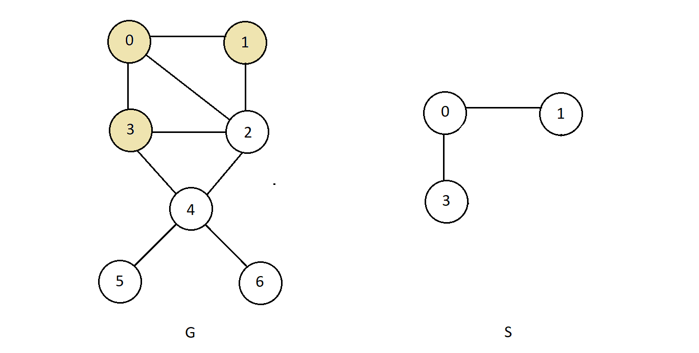
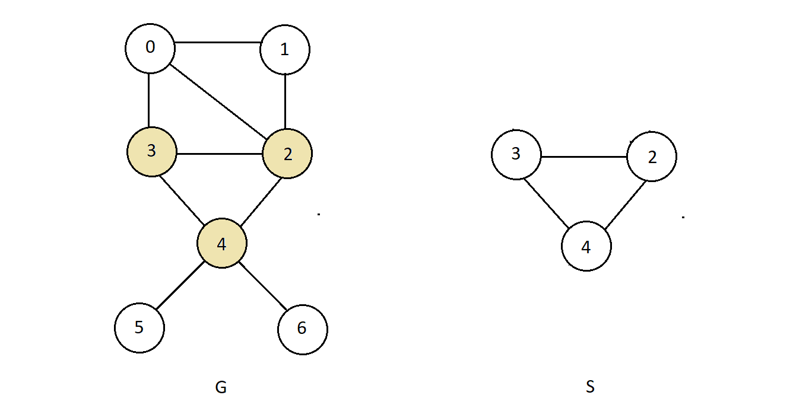
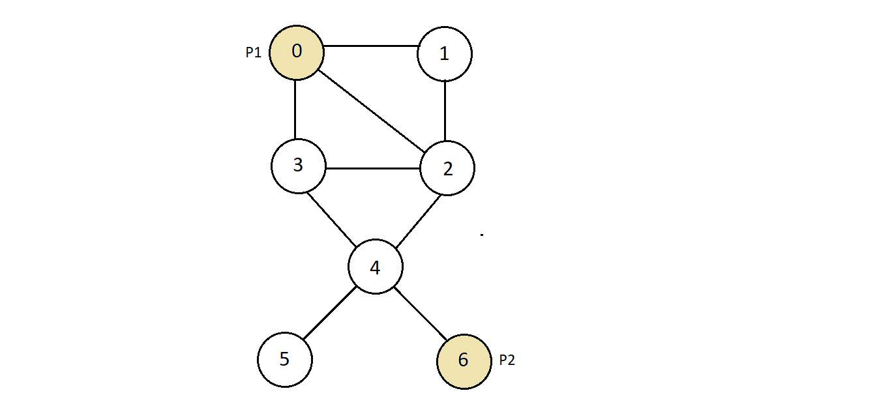
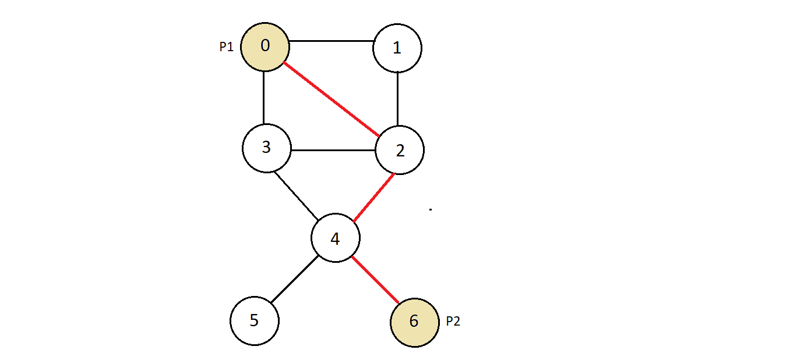
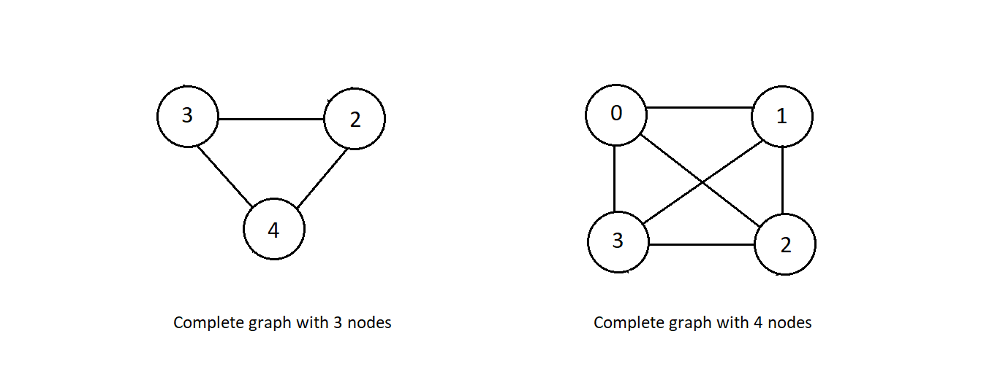

A subgraph of a graph G is a graph whose vertices and edges are subsets of the original
graph G.
It means that if we consider the graph G illustrated below, then its subgraph could be
the graph S.

S is a subgraph of graph G because nodes 0, 1 and 3 form the subset of the set of nodes
in G, and the edges connecting 0 and 3 and 0 to 1 also from the subset of the set of
edges in G
Another subgraph of graph G could be the one mentioned below.

This is a subgraph of graph G too, because node 3, 2 and form the subset of the set of
nodes in G, and the edges connecting 3 to 4, 3 to 2, and 2 to 4 also form the subset of
the set of edges in G.
Connected Graphs:
A connected graph, as the word connected suggests, is a graph that is connected
in the sense of a topological space, i.e., that there is a path from any point to any
other point in the graph. And the graph which is not connected is said to be
disconnected
Consider the graph below:

We have marked two random points P1 and P2, and we'll see if there is a path P1 to P2.
There is a path from P1 to P2 via nodes 2 and 4.

There could be a number of other ways to reach point P2 from P1, but there should exist
atleast one path from any point to another point for the graph to be called connected,
otherwise disconnected.
Complete Graphs:
A complete graph is a simple undirected graph in which every pair of distinct vertices
is connected by a unique edge. Below illustrated complete graphs with 3 and nodes
respectively.

In any of the examples above, every pair of nodes is connected using a unique edge of
their own. That is what makes a graph complele.
Note → every complete graph is connected graph, but all connected graph are not
necessarily complete.
What are spanning trees?
A subgraph of a graph G is a graph whose vertices and edges are subsets of the original graph G.
Hence, a connected subgraph 'S' of a graph G (V, E) is said to be a spanning tree of the
graph if and only if:
All the vertices of G are present in S.
No. of edges in S should be |V|-1, where |V| represents the number of vertices.
That is, for a subgraph of a graph to be called a spanning tree of that graph, it should have all
vertices of the original graph and must have exactly |V|-1 edges, where |V| represents the number of
vertices and the graph should be connected.
Consider a simple graph G illustrated below
Now consider another graph S.
Checking steps :
Is graph S a subgraph of G? ✓
Is graph S connected ? ✓
Are all vertices of graph G present in graph S? ✓
Does the number of edges in graph S equal the number of vertices in graph G-1?
✓
Since graph G satisfies all the above conditions, it is a spanning tree of the graph G.
Number of spanning trees for complete graphs.
A complete graph has nn-2 spanning trees where n represents the number of vertices in
the graph.
Consider the complete graph below with 4 nodes
This complete graph has 4 vertices, hence the number of spanning trees it can have is, 4 raised
to the power (4-2), i.e., 42 which is 16.